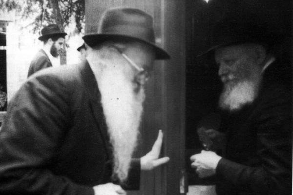

The Chassid Who Had Free Access to the Rebbe’s Room
Rabbi Yehuda Leib Bistritzky a”h had a special relationship with both the Rebbe Rayatz and the Rebbe and Rebbetzin.

A number of years ago, I went to the home of R’ Yehuda Leib (Leibel) Bistritzky a”h in order to interview him about Rabbi Eliyahu Simpson. The hours I spent with him were a Chassidishe delight. It’s not every day that I get to interview a Chassid who was a mekurav of both the Rebbe Rayatz and the Rebbe. R’ Leibel’s home was full of s’farim. He loved s’farim and over the years he bought s’farim old and new. Hundreds of shelves adorned the dining room, the foyers and a small library he built in his house.
Although we had not previously met, R’ Leibel treated me with great warmth and shared a wealth of Chassidishe memories. He related them charmingly, smiling his heartwarming smile now and then.
He spoke emotionally about the Rebbe Rayatz’s call “L’Alter l’t’shuva, L’Alter l’Geula,” and took out issues of HaKria V’HaK’dusha to show me. That was the time when the Torah for Moshiach began to be written.
R’ Leibel told how the new issues would come from the printer directly to the home of R’ Simpson in Boro Park. In the shul, located in the Simpson home, they would pack the issues to be sent all over the United States and abroad:
“We – a few young bachurim – were excited to work on spreading the Rebbe’s Besuras Ha’Geula.”
R’ Leibel went on to describe the writing of Moshiach’s Torah scroll:
“It wasn’t an easy time. There were those who spoke against the message ‘L’Alter l’t’shuva’ and against HaKria V’HaK’dusha, but the Rebbe Rayatz wasn’t fazed and called the detractors kalbin d’chatzifin [impudent dogs].
“I was present when they began writing the Torah. The first piece of parchment was placed on the table in the zal and each person wrote a letter. Those were days when you could feel the Geula, how close and palpable it was, but … we did not merit it.”
RESCUE FROM THE CONTINENT OF DEATH
R’ Leibel Bristritzky was born in 5686/1926 in Hamburg, Germany. His father, R’ Mordechai, was a Boyaner Chassid and his mother was the daughter of R’ Levi Lagover, a Chassid and well-to-do man.
Black clouds began covering the skies of Germany in his childhood, when the Nazis rose to power. The Jews of Germany began to suffer from the persecution of the Nazis. Even young Leibel was beaten on the street by anti-Semites. His family left Germany for Antwerp where his grandfather, R’ Levi lived. Then the family moved to Holland.
The Bistritzky family celebrated his bar mitzva right before the war began. His grandfather from Antwerp came to participate in the seudas bar mitzva and when he was asked to speak, he reviewed a maamer Chassidus.
The threat of war loomed ever greater and the Bistritzky family yearned to move to Eretz Yisroel, but the pogroms perpetrated by the Arabs against the Jews in Eretz Yisroel in 1936-1939 made them fearful of aliya. They turned their efforts toward obtaining visas for the US. The American government did not expedite visas for refugees until they received proof that those requesting visas would not become a burden on the government. Usually, what happened was that relatives living in the US would take responsibility for the refugees, but the Bistritzkys did not have relatives in the US.
The father of the family was a large scale fish merchant and he came up with a clever plan. He sailed to the US and persuaded the company who bought fish from him to deposit $50,000 into a bank account that he opened. With documentation of tens of thousands of dollars in his bank account, he went to the American consul in Holland and got visas for his entire family the next day.
They landed in the United States a few weeks before the war began and settled in New York.
FIRST ENCOUNTER WITH THE REBBE RAYATZ
A few months later, the Rebbe Rayatz arrived in America. Leibel’s parents went to the kabbalas panim that was arranged and a few days later, Leibel was able to see the Rebbe and have yechidus:
“On Purim 5700/1940, my father took my mother and the children to a farbrengen of the Rebbe Rayatz at the Greystone Hotel in Manhattan. Before the farbrengen, my father went over to R’ Eliyahu Simpson, who was in charge of letting people in for yechidus, and asked permission to go in.
“As we stood at the door, the Rebbe motioned to us to come in. We went in and my father pointed at me and said, ‘This is my son Yehuda Leib.’ The Rebbe held out his hand and I shook it.
“The Rebbe said to me, ‘Shalom aleichem,’ and looked at me, and at that moment, I felt as though something was cutting right through me. Until then I had seen quite a few rabbanim and Admurim in Europe but I had never felt anything like this. Afterward, the Rebbe told me to sit down.
“At this point, my father introduced my younger brother and said that my mother and two sisters were standing near the other door. The Rebbe said they should open the door, and after they came in, my father introduced them to the Rebbe. Then my father asked the Rebbe for a bracha for my grandparents and the Rebbe (who knew them) rose and gave a bracha.
“After the yechidus, we went downstairs and all the assembled entered the large hall. The Rebbe came downstairs and spoke into a microphone, something new in those days. Since I was a child who did not speak fluent Yiddish, I had a hard time understanding what was said in Yiddish, but I remember the sight of the masses of people who pushed toward the Rebbe in order to see his face. There were also kids my age, like the children of R’ Simpson, R’ Moshe Kazarnovsky, R’ Sholom Chaskind, and the Sharfstein brothers who later became my classmates.”
Thanks to the close connection of his father, Leibel was also a ben-bayis of the Boyaner Rebbe zt”l who lived in the US, but the Admur told the young boy, “You need to be a Lubavitcher Chassid. You can continue visiting me as a friend.”
UNUSUAL KIRUVIM FROM THE REBBE AND BEIS REBBI
When he first arrived in the US, Leibel attended Yeshivas Toras Emes in Boro Park. Every Friday night he would learn Chassidus with R’ Dovber Chaskind and R’ Eliyahu Nachum Sklar. On Wednesdays he learned with R’ Chadakov. When Yeshivas Tomchei T’mimim opened he attended that yeshiva.
Leibel enjoyed many special kiruvim (signs of affection) from Beis Rebbi, kiruvim that increased as the years went by. In those days, young bachurim did not attend the Rebbe Rayatz’s farbrengens, but R’ Leibel was allowed to attend. He also became close with the Rebbe and Rebbetzin Chaya Mushka who often visited his parents’ house. Whenever he knew of such a visit ahead of time, he made sure to be there.
He often visited the Rebbe in his office on the first floor of 770. Despite his young age, he helped print the s’farim of Kehos including the HaYom Yom, Bod Kodesh, and various maamarim, and also had a share in preparing the S’dei Chemed series for print. He did this work as a volunteer. He made it a habit to go to the Shulzinger Bros. printing house where Kehos books were printed, in order to keep tabs on the new maamarim that were being printed, and to get a fresh copy of whatever was being printed at the time.
When the s’farim of the Tzemach Tzedek were published, the Rebbe told him to come to his room and said he would give him a set for free. The Rebbe also gave him a set of S’dei Chemed. There were times R’ Leibel would go to the Rebbe and give him rare s’farim that he came across. He would often ask the Rebbe questions that came up in his learning of Gemara and Halacha.
Each time, before R’ Leibel had yechidus with the Rebbe Rayatz, he wrote a pidyon nefesh which he showed to the Rebbe MH”M who would make corrections. R’ Leibel told me about those audiences with the Rebbe Rayatz:
“I would usually have the yechidus alone but it wasn’t easy understanding the Rebbe Rayatz in those days [due to his stroke and speech impediment]. One time, I asked R’ Simpson to come with me as he did with many others, so he could explain to them what the Rebbe said. He said I should go in myself. I asked him again and again but he did not like to hear that which wasn’t meant for him. When it was my turn, I was sure he would come in with me but he told me to go in and he closed the door, leaving me alone with the Rebbe.”
ONLY ON HAPPY OCCASIONS
In 5708, R’ Leibel became engaged to Ita Travis, daughter of R’ Shlomo, a Lubavitcher Chassid who had dealings in the oil industry in Texas and who donated generously to Chabad mosdos. R’ Leibel and his kalla and their parents had yechidus before the tennaim. R’ Simpson wrote down what the Rebbe said:
“It is customary to wish mazal tov only after the simcha is finalized, but this is a personal simcha for me when we meet together. A long time may pass without our seeing one another. May Hashem enable us to meet only on happy occasions. When two Jews meet there is simcha up above and down below; one simcha generates another simcha.”
The Rebbe addressed the women and said that he meant that you don’t say mazal tov until the tennaim, and it was understood that after the tennaim the Rebbe would write mazal tov wishes. After parting blessings, the Rebbe said, “May Hashem make it, indeed, a big simcha. Be well.”
When the Rebbe Rayatz passed away, something extraordinary happened:
“In 5710, my brother found a thin bichel (booklet) of Chassidus. After I gave it to Ramash (the Rebbe), he thanked me in Russian. When the Rebbe saw that I did not understand, he expressed his surprise and asked, ‘Leibel, you don’t speak Russian?’ I said that due to the desire to distance themselves from communism, my parents refused to allow their children to speak Russian. The Rebbe said, ‘Since it says on the bichel that it belongs to the office of the Rebbe [Rayatz] but it doesn’t have a name, go to the Rebbe [Rayatz] and ask him what to do.
“I took the opportunity to bring my brother along to the Rebbe Rayatz. When I showed the bichel to the Rebbe, he spent time looking through it. On the back of the booklet there was attached a handwritten note with a long story. The Rebbe read it from beginning to end. When he finished, he said, ‘This is very sweet Chassidus. This is Chassidus of my grandfather but I have [the original in] his handwriting.’
“The Rebbe sat in the center, at his desk, my brother stood opposite him and I stood in the corner. The Rebbe held out his hand and I thought he was holding it out to my brother, so I took my brother’s hand and held it out to the Rebbe, but the Rebbe turned to me and held his hand out to me. I didn’t know what to do. Should I cause it to just remain there for nothing? I immediately held out my hand, which is not the custom among Chabad Chassidim. The Rebbe shook my hand and said, ‘Give regards to your father that he should have nachas from you and all the children.’
“Since, in Lubavitch, they would say that if the Rebbe gives you his hand that indicates something is amiss, I was afraid that this did not bode well for me. Full of trepidation, I went with my brother to Ramash and told him what happened. I asked him to arouse mercy before the Rebbe Rayatz, but Ramash dismissed this with a wave of his hand.
“Nevertheless, I was still worried. When I returned home, I began writing my will. When I finished, I gave it to my wife and went to bed. I suddenly had a high fever and the doctor who was called said I had a serious infection and he gave me an injection of penicillin. I was sick for several days and the fever did not come down. I called Ramash and told him about my condition and I asked him to arouse mercy. I told him that I thought my illness was connected with shaking the Rebbe’s hand.
“This event I’m describing took place shortly before Yud Shevat 5710, and when the Rebbe Rayatz passed away a few days later, I understood everything. When I said this to Rashag, he was amazed by the incident and said, ‘The Rebbe probably wanted to part from your father.’”
KIRUVIM
From this point on, there began a bond of hiskashrus between R’ Leibel and the new Rebbe, with the Rebbe displaying many signs of affection for the young Chassid. Leibel lived in Boro Park and on Shabbasos when the Rebbe farbrenged, he would daven in R’ Simpson’s shul in Boro Park, then go home and make Kiddush for his wife, and then walk to Crown Heights.
After the farbrengen, he would often accompany the Rebbe to his house. On the way, the Rebbe would talk to him about various topics. One time, the Rebbe asked him why he walked back to Boro Park and did not wait until after Shabbos. R’ Leibel said that as a bachur he had been hosted by the family of R’ Tzemach Gurevitch, but now he felt it would be too much of a burden for him to be their guest that often. The Rebbe did not respond, but the following Shabbos Mevarchim after the farbrengen, R’ Shneur Zalman Gurary invited him to the Shabbos meal in his house. R’ Leibel asked him what made him decide to invite him but received no response. He assumed the invitation had come about because of the Rebbe.
When he wanted to see the Rebbe, he waited in line with everyone else until late at night. One time, the Rebbe said to him, “Why do you need to wait in line for so long? Knock at my door whenever you want, and come in.” But R’ Leibel, as a Chassid and mekushar, did not avail himself of the open door policy. He said he wanted to feel like a Chassid going to see his Rebbe. However, over the years, there were a few times that he went to the Rebbe without waiting, when it had to do with other people’s situations.
He owned Bistritzky’s Kosher Gourmet Food on the Lower East Side of Manhattan. There were years when parnasa wasn’t easy and he would tell the Rebbe and receive a bracha.
“I was once in a very difficult financial situation and I asked the Rebbe for a bracha. When I went in, the Rebbe read my pidyon nefesh and said, ‘Hashem will help you.’ I told the Rebbe I wasn’t budging until ‘a tzaddik decrees …’ and I cried. The Rebbe looked at me and finally said, ‘May it be as you said.’
“From then on, the situation changed bit by bit and over the years I saw how the bracha was fulfilled.”
R’ Leibel was faithful to Beis Rebbi, and over the years was a big help to Rebbetzin Chaya Mushka.
CHASSIDISHE MISHLOACH MANOS
R’ Leibel had a special z’chus in that he brought the Rebbe unique mishloach manos with a Chassidishe theme. His mishloach manos usually included a special challa that his wife baked, which the Rebbe used for his Purim seuda. On Purim 5728/1968, to mark Mivtza T’fillin which had started the previous year, his wife made a cake in the shape of t’fillin. From then on, each year his wife made a cake in the shape of something of Chassidic significance.
When the Rebbe promoted 71 mosdos, the cake was in the shape of little houses. When the Rebbe spoke about “prazos teishev Yerushalayim,” the cake was in the shape of the Kosel. When the Rebbe spoke about l’chat’chilla aribber, there was a fence in the middle of the cake with a Chassid jumping over it.
The Rebbe received many mishloach manos, but the cake that R’ Leibel brought was the only one that was on the Rebbe’s table at home on Purim. When the Rebbe would come home, he would look at the cake and the message for that year. Then he would have it sent to Beis Rivka or Machon Chana. The girls would crumble the cake and make a huge cake out of it from which pieces were given to all. The Rebbe would also send the challa to one of the mosdos.
There were years when the mishloach manos were given in a very unusual way. Here are three of them as described by R’ Leibel:
“In 5748, after the passing of the Rebbetzin, I brought mishloach manos to 770. I stood near the door and when the Rebbe went to his room after Mincha, I went over and said I wanted to put this in his room. The Rebbe opened the door and told me to go in. I asked the Rebbe where to put it and he said I should put it on the bed. As always, the Rebbe stood and examined the mishloach manos.
“On Purim 5752, about two weeks after 27 Adar I, my son Yingy who was helping out in those days, told the Rebbe that I wanted to bring mishloach manos as I did every year. The Rebbe nodded in the affirmative. When I brought the mishloach manos, standing near the room were the secretaries, the doctor, the male nurse, and my son while the Rebbe sat. I put the mishloach manos in front of the Rebbe and the Rebbe examined it.
“On Purim 5754, the mishloach manos were prepared early. My wife made a cake in the shape of a doctor with the words, ‘zait gezunt.’ When I arrived with my son and the mishloach manos, the Rebbe was sitting with his hat on. I went over to the Rebbe and said, ‘Yehuda Leib ben Shifra is bringing mishloach manos.’ The Rebbe had vision problems at the time but he nodded his head. I told the Rebbe that Chassidim want the Rebbe to have a refua shleima and the Rebbe answered amen. I said, ‘Chassidim want the revelation of Moshiach,’ and the Rebbe answered amen.”
FOUNDER OF CROWN HEIGHTS HATZALAH
R’ Leibel started the chapter of Hatzalah in Crown Heights on an entirely voluntary basis. The purpose of Hatzalah is to provide a speedy medical response in an emergency. Today, his son Yingy runs the organization.
***
In the last decade of his life, R’ Leibel and his wife moved to Eretz Yisroel and settled in Yerushalayim. Despite his advanced age, he continued his acts of medical chesed by regularly visiting patients in Hadassah Ein Kerem hospital. He visited the sickest patients and cheered them up. As always, he did this modestly, in a low-key way.
Last year, R’ Leibel went back to the city of his birth, Hamburg, for the inauguration of his grandson, R’ Shlomo, as Chief Rabbi of the city.
On 4 Sivan, R’ Leibel passed away after a heart attack at the age of 86. He is survived by his wife, Mrs. Ita Bistritzky, and children: Mrs. Miriam Sheindel Nelkin – Toronto, Canada; R’ Yosef Yitzchok Bistritzky – Flatbush, NY; R’ Avrohom Yisroel (Yingy) Bistritzky – Crown Heights; Mrs. Raizy Greenwald – Rechovot, Israel; Mrs. Ruchama Clapman – Five Towns, NY; Mrs. Devora Leah (Z.C.) Cohen – Aventura, Florida; R’ Menachem Mendel Bistritzky – Five Towns, NY; Rabbi Shlomo Mordechai Bistritzky – Shliach in Agoura Hills, CA; R’ Shneur Zalman Bistritzky – New York, NY; grandchildren, great-grandchildren and great-great grandchildren.
Berger. "The Chassid Who Had Free Access to the Rebbe’s Room." Beis Moshiach, no. 882 (June 6, 2013).